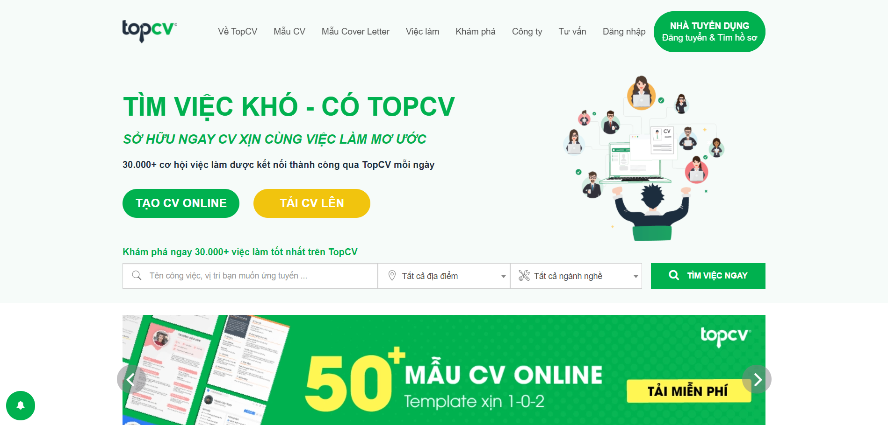
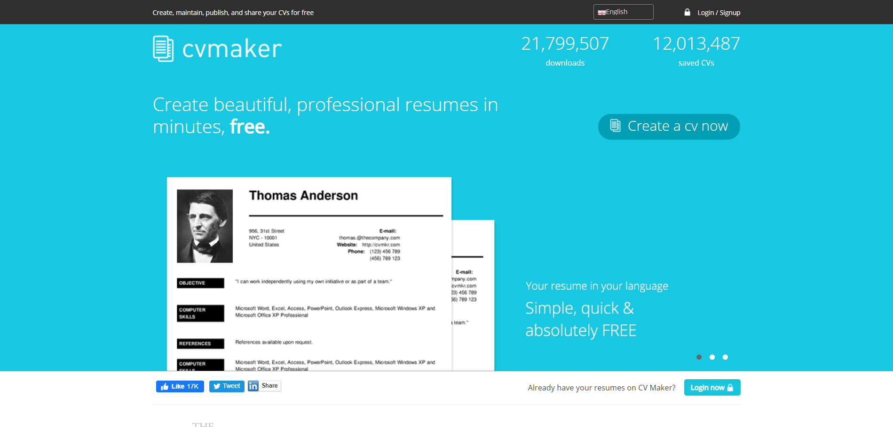
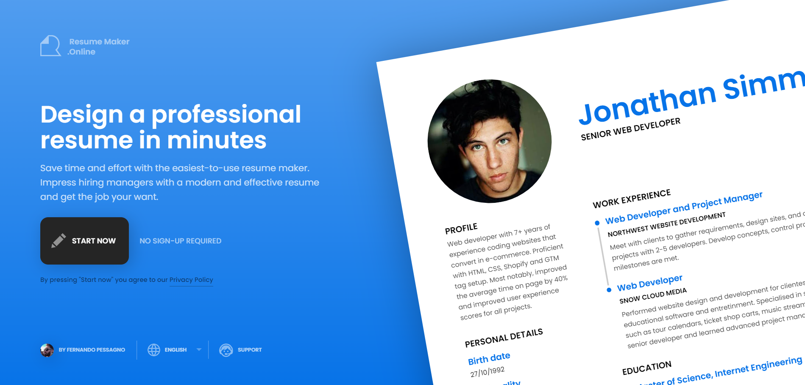
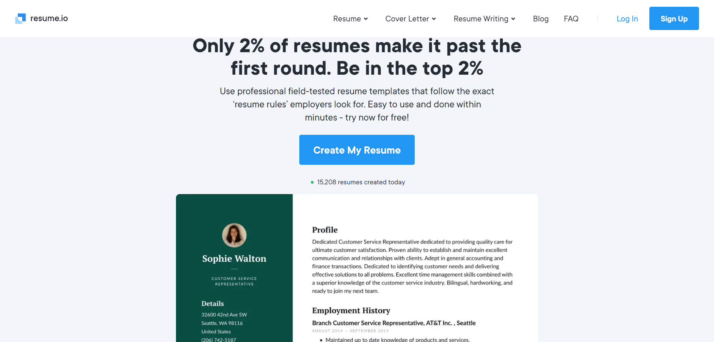
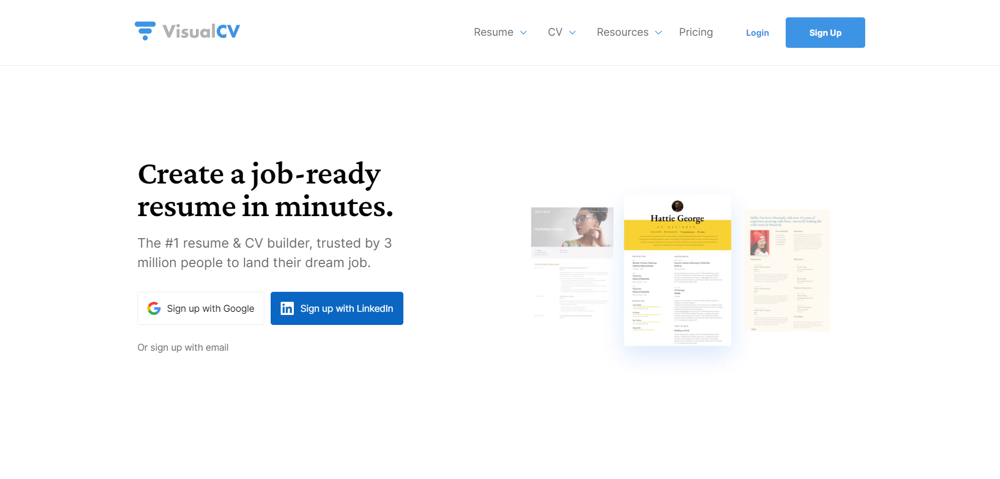
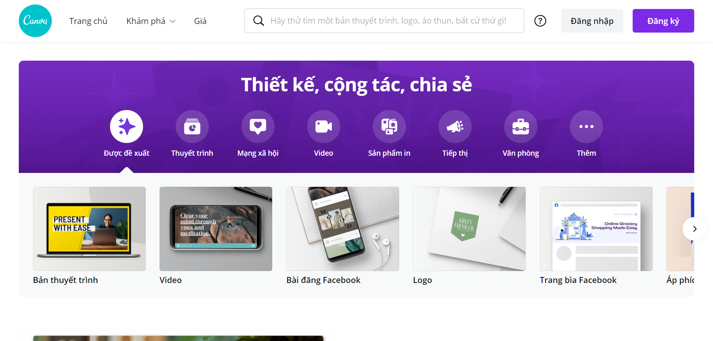

- 1. topcv.vn:
- Miễn phí (có thể nâng cấp lên bản trả phí để có nhiều tiện ích hơn)
- Xuất được thành file PDF, HTML, TXT
- Mẫu mã rất đa dạng
- Giao diện tương đối dễ sử dụng, trực quan
- Linh hoạt trong việc thay đổi màu sắc, font chữ
- Có gợi ý cách viết nội dung CV ngay bên cạnh
- Có cảnh báo lỗi nếu như bỏ trống một số thông tin quan trọng
- Phải đăng ký tài khoản để sử dụng, có thể liên kết với tài khoản Facebook
- Có watermark cuối trang, yêu cầu nâng cấp lên bản trả phí để xóa được

- Ưu điểm:
- Nhược điểm:
- 2. cvmkr.com:
- Miễn phí
- Xuất được thành file PDF, HTML, TXT
- Linh hoạt thêm bớt các mục nội dung
- Phải trả phí để được lựa những mẫu mã đẹp hơn
- Giao diện không quá dễ dùng, xử lý hơi chậm, không vừa sửa vừa xem ngay thành phẩm được
- Font chữ bị hạn chế theo từng mẫu

- Ưu điểm:
- Nhược điểm:
- 3. Resumemaker.online:
- Xuất được thành file PDF
- Giao diện đẹp, trực quan, cực kỳ dễ sử dụng
- Linh hoạt thêm bớt các mục nội dung
- Linh hoạt thay đổi màu sắc, cỡ chữ
- Phải trả phí để tải được file xuống
- Không được lựa chọn mẫu, tuy vậy nhưng mẫu mặc định khá đẹp rồi
- Font chữ hạn chế, có font chưa tối ưu cho tiếng Việt

- Ưu điểm:
- Nhược điểm:
- 4. Resume.io:
- Có nhiều mẫu để lựa chọn
- Xuất được thành file PDF và Docx (tùy mẫu)
- Giao diện đẹp, trực quan, cực kỳ dễ sử dụng
- Linh hoạt thêm bớt các mục nội dung cực kỳ đa dạng và chi tiết
- Phải trả phí để tải được file xuống
- Không chọn được font chữ nên sẽ không phù hợp cho CV tiếng Việt

- Ưu điểm:
- Nhược điểm:
- 5. visualcv.com:
- Có nhiều mẫu để lựa chọn
- Xuất được thành file PDF
- Giao diện tương đối dễ sử dụng
- Có thể thay đổi được font chữ và mẫu trình bày, tuy không nhiều lắm
- Linh hoạt thêm bớt các mục nội dung, chỉnh sửa chi tiết từng dòng
- Phải đăng ký / đăng nhập để bắt đầu sử dụng, tuy vậy thì tài khoản liên kết với Google và Linkedin nên không quá khó khăn
- Phải trả phí để tải được file xuống

- Ưu điểm:
- Nhược điểm:
- 6. canva.com:
- Hoàn toàn miễn phí
- Xuất được thành file PDF, PNG, JPG và SVG (bản trả phí)
- Mẫu mã rất đa dạng
- Giao diện trực quan, dễ sử dụng
- Cực kỳ linh hoạt trong việc thay đổi mọi yếu tố trên ấn phẩm
- Tuy giao diện trực quan dễ sử dụng nhưng Canva không phải là trang chuyên để làm CV nên không có những gợi ý trình bày nội dung như các trang khác.

- Ưu điểm:
- Nhược điểm:
- Bonus - Nguồn cảm hứng:
- Link mình gửi các bạn là tổng hợp những mẫu mình thường sử dụng vì phong cách trình bày đơn giản, hiệu quả.
- Đây là nguồn cảm hứng mình cho là lớn nhất với rất rất nhiều thể loại cũng như kết quả tìm kiếm.
- Điểm trừ của nó là bạn chỉ xem được chứ không thể tải về để chỉnh sửa được.
- "Chợ thiết kế" với cực kỳ nhiều thể loại, đây cũng là một nguồn tham khảo lớn mà mình hay xem.
- Với Creative market, bạn hoàn toàn có thể MUA các sản phẩm của họ về để thoải mái chỉnh sửa, nhớ đăng nhập để lần sau có cần thì có thể tải lại được.
- Ngoài ra với mỗi trưa thứ 2 hàng tuần, chợ đều tặng miễn phí 6 sản phẩm thuộc các thể loại bất kỳ, may mắn thì có thể rơi vào đúng thể loại bạn cần đó :D
- a. Pinterest:
- b. Creative Market:
Qua 3 phần của chuỗi bài viết "Sửa CV một chút", mình hy vọng rằng các bạn đã có thể tự tạo cho mình được một chiếc CV ưng ý và nhanh chóng tìm cũng như ứng tuyển được vào công việc mong muốn của bản thân nha.
Cảm ơn bạn đã đọc hết bài viết của mình ^^